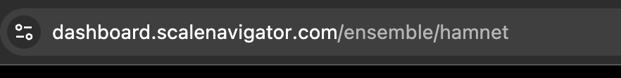
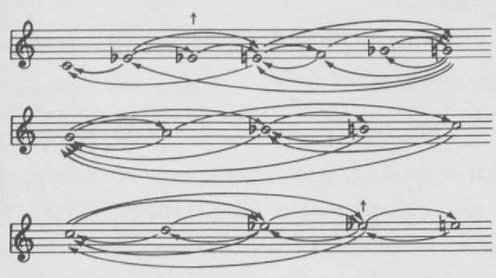

Role: Designer & developer (sole)
JavaScript / Tone.js / VexFlow
In 1977, Jeff Todd Titon published Early Downhome Blues, a musicological study that included something remarkable: a generative model of blues melody. He transcribed 44 recordings from 1926–1930, analyzed note-to-note motion, and constructed a pitch transition network — a map of which notes can follow which, including the microtonal "blue third" that sits between the keys of a piano.
That model had been sitting in a book for almost fifty years. I wanted to make it playable.
I framed the music notation itself as the interface. You click notes directly on the staff, and the app shows only the valid next notes as paths. The network teaches you its own rules as you move. A "random walk" button generates melodies by following the transitions automatically.

The blue third is a quarter-tone — a pitch that doesn't exist on a standard keyboard. I designed a drone that bends to match the melody's inflection, so you hear the quarter-tone rather than being told about it. MIDI output with pitch bend lets the quarter-tones survive into your DAW or hardware.

I posted it to r/blues. Blues musicians hated it. The output sounded nothing like blues. I was embarrassed enough to take the post down.
But they were right.
A faithful implementation of the pitch network wasn't producing faithful blues melodies. The model captured which notes could follow which, but not how those notes should move — the contours, the phrasing, the gravitational pull toward resolution.
Before I launched the project, I emailed Jeff Titon asking for his blessing. He played with it and wrote back:
"The random function didn't generate any acceptable blues melodies."
That sentence changed the direction of the project. I went back to Chapter 4 of his book and implemented more of the principles he'd formalized: downward bias, leap-up / step-down motion, cadential gravity toward C at phrase endings, contour shaping based on his "rise-then-fall" classification. I added phrase structure so Line 2 would try to emulate Line 1 melodically — the AAB call-and-response form that defines blues.
The random walk became a weighted walk. The output started sounding like something.
Getting the person who built the original model to play with my version — and push back — was the real outcome of this project.
The project is nowhere close to done. Titon's book contains dozens more rules I haven't implemented — the GitHub issues are a roadmap of everything still missing. And honestly, it still doesn't sound like blues. But it sounds like something — an interesting abstraction of blues, a machine's interpretation of the rules without the feel.
I started thinking I was building an interface for a musicological model. I finished realizing that musical style lives in far more than pitch transitions.
Reference: Titon, Jeff Todd. Early Downhome Blues: A Musical and Cultural Analysis. 2nd ed., University of North Carolina Press, 1994.